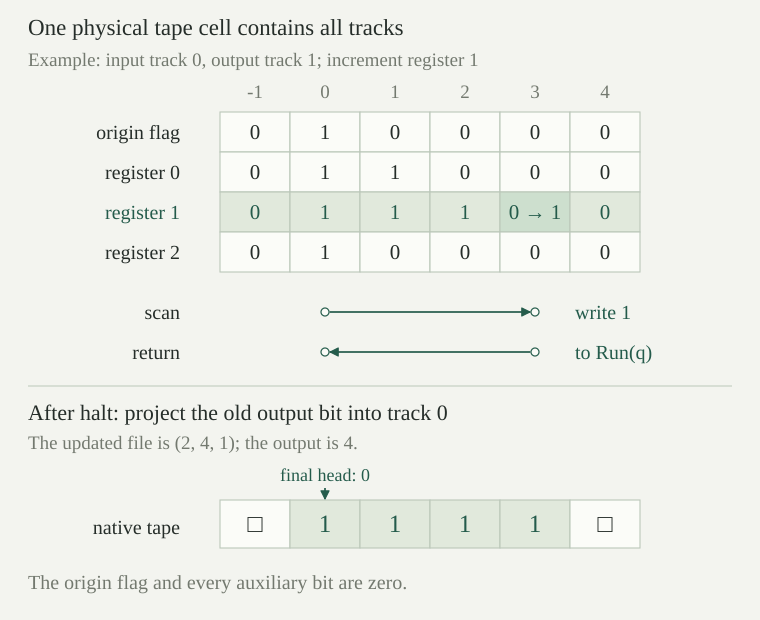

Fix a positive integer \(k\), the register indices \(r\in\{0,\ldots,k-1\}\), a finite nonempty set \(L\) of labels, and an initial label \(p_0\). A register file is a function \(R:\{0,\ldots,k-1\}\to\mathbb N\). Write \(R[r\leftarrow a]\) for the file that has value \(a\) at \(r\) and agrees with \(R\) at every other register. A counter program is a total instruction table \(P\) on \(L\), with each row of one of the following forms:
A counter configuration is a pair \((p,R)\). Increment replaces it by \((q,R[r\leftarrow R(r)+1])\). Decrement tests the old value: if \(R(r)>0\), it replaces the configuration by \((q_+,R[r\leftarrow R(r)-1])\); if \(R(r)=0\), it goes to \((q_0,R)\). A halt row has no successor. Every target label is in \(L\); there is no unstated convention for a missing instruction.
The stopped counter advance \(A_P\) takes the successor just defined and fixes a configuration whose instruction is halt. Its counter run from \(S\) is \(S_0=S\), \(S_{j+1}=A_P(S_j)\). An actual counter step is one of the increment or decrement transitions, including a zero-branch transition that happens to leave the configuration unchanged. Repeated stopped configurations after a halt are not actual steps.
Choose an input register \(i\) and an output register \(o\), allowing \(i=o\). The input file \(R_{i,n}\) has value \(n\) at \(i\) and zero at all other registers. Starting from \((p_0,R_{i,n})\), define the computed counter output by
This relation has at most one output. Indeed, each configuration has at most one successor, so the recurrence fixes its entire run. If a halt occurs at time \(j\), induction on \(d\) gives \(S_{j+d}=S_j\). Comparing any two halting times therefore gives the same register file and the same output. If no halt occurs, write \(G_{P,i,o}(n)\uparrow\).
With registers \(0,1\), let the initial label be \(a\) and use the following total table. Starting with \(R(0)=u\) and \(R(1)=v\), the program halts after exactly \(2v+1\) actual counter steps with register file \((u+v,0)\). In particular, input register \(1\) and output register \(0\) give \(G_{P,1,0}(n)=n\).
| Label | Instruction |
|---|---|
| \(a\) | \(\operatorname{dec}(1,b,h)\) |
| \(b\) | \(\operatorname{inc}(0,a)\) |
| \(h\) | \(\operatorname{halt}\) |
After \(2j\) steps, for \(0\le j\le v\), the label is \(a\) and the file is \((u+j,v-j)\). This holds at \(j=0\). When \(j<v\), the decrement consumes one from register \(1\) and goes to \(b\); the increment adds one to register \(0\) and returns to \(a\), proving the induction step. At \(j=v\), the zero branch takes one further step to \(h\). Neither of the other labels halts, so this is the first halting time and gives the asserted file.
A track symbol is a pair \(a=(\varepsilon,\beta)\), where \(\varepsilon\in\{0,1\}\) is an origin flag and \(\beta:\{0,\ldots,k-1\}\to\{0,1\}\) gives one bit for each register. Write \(a_r=\beta(r)\). The alphabet is finite: it has \(2^{k+1}\) symbols. Its blank has flag and all bits zero. Its distinguished native mark has flag zero, bit \(i\) equal to one, and every other bit zero. These two symbols are distinct at bit \(i\).
The bit update \(a[r\leftarrow b]\) changes only bit \(r\). Let \(\operatorname{flag}(a)\) set the origin flag to one, and let \(\operatorname{clear}(a)\) set it to zero. For cleanup define the output projection \(\pi(a)\): its origin flag is zero, its bit \(i\) is the old bit \(a_o\), and every other bit is zero. All of these are operations on one symbol. In particular, \(\pi\) reads the old output bit even when \(i=o\).
Use these as the alphabet, blank and mark of the existing native Turing model: one transition reads one old symbol, writes at that position, then moves left, stays, or moves right. Multiple tracks do not mean multiple heads or a transition that can inspect several cells.
The compiler uses the following control states:
Here \(p,q\in L\) and \(r<k\). Thus the state set is finite, and the initial state is \(\mathsf{Boot}\). Increment and decrement scan one selected track; \(\mathsf{Back}(q)\) remembers only the label to enter after returning to the origin. The two cleanup phases remember no unbounded number. The tape, rather than the finite control, stores the register values.
The boundary tape \(t_R\) has origin flag one exactly at integer position zero, and satisfies
All comparisons here are in \(\mathbb Z\), viewing \(R(r)\) as an integer. Let \(M=\max_r R(r)\). Every nonblank cell lies in \(\{0\}\cup\{z:0\le z<M\}\), a finite set, so this really is a tape of finite nonblank support. A boundary configuration \(B(p,R)\) has control state \(\mathsf{Run}(p)\), head at zero, and tape \(t_R\). The flag remains visible even when every register is zero.
The origin is retained deliberately. This representation records absolute position zero, whereas zipper coding records a tape relative to its head. Boundary symbols need not be native marks: the origin flag and auxiliary tracks must be removed before the native output convention is used.
The compiled machine \(T_{P,i,o}\) has the preceding alphabet and control states. Its complete table is below. In each row, \(a\) is the old scanned symbol; \(\varepsilon\) is its flag; \(a\nearrow r\) means \(a[r\leftarrow1]\), and \(a\searrow r\) means \(a[r\leftarrow0]\). The nonzero-track test \(\operatorname{any}(a)\) means that some register bit is one. An omitted condition means every symbol. Each row specifies the new state, written symbol and movement; it is one native transition.
| State and condition | New state | Write | Move |
|---|---|---|---|
| \(\mathsf{Boot}\) | \(\mathsf{Run}(p_0)\) | \(\operatorname{flag}(a)\) | \(S\) |
| \(\mathsf{Run}(p),\ P(p)=\operatorname{inc}(r,q)\) | \(\mathsf{Inc}(r,q)\) | \(a\) | \(S\) |
| \(\mathsf{Run}(p)\) \(P(p)=\operatorname{dec}(r,q_+,q_0),\ a_r=0\) | \(\mathsf{Run}(q_0)\) | \(a\) | \(S\) |
| \(\mathsf{Run}(p)\) \(P(p)=\operatorname{dec}(r,q_+,q_0),\ a_r=1\) | \(\mathsf{Dec}(r,q_+)\) | \(a\) | \(R\) |
| \(\mathsf{Run}(p),\ P(p)=\operatorname{halt}\) | \(\mathsf{Clean}\) | \(a\) | \(S\) |
| \(\mathsf{Inc}(r,q),\ a_r=1\) | \(\mathsf{Inc}(r,q)\) | \(a\) | \(R\) |
| \(\mathsf{Inc}(r,q),\ a_r=0,\ \varepsilon=1\) | \(\mathsf{Run}(q)\) | \(a\nearrow r\) | \(S\) |
| \(\mathsf{Inc}(r,q),\ a_r=0,\ \varepsilon=0\) | \(\mathsf{Back}(q)\) | \(a\nearrow r\) | \(L\) |
| \(\mathsf{Dec}(r,q),\ a_r=1\) | \(\mathsf{Dec}(r,q)\) | \(a\) | \(R\) |
| \(\mathsf{Dec}(r,q),\ a_r=0\) | \(\mathsf{Erase}(r,q)\) | \(a\) | \(L\) |
| \(\mathsf{Erase}(r,q),\ \varepsilon=1\) | \(\mathsf{Run}(q)\) | \(a\searrow r\) | \(S\) |
| \(\mathsf{Erase}(r,q),\ \varepsilon=0\) | \(\mathsf{Back}(q)\) | \(a\searrow r\) | \(L\) |
| \(\mathsf{Back}(q),\ \varepsilon=0\) | \(\mathsf{Back}(q)\) | \(a\) | \(L\) |
| \(\mathsf{Back}(q),\ \varepsilon=1\) | \(\mathsf{Run}(q)\) | \(a\) | \(S\) |
| \(\mathsf{Clean},\ \operatorname{any}(a)\) | \(\mathsf{Clean}\) | \(a\) | \(R\) |
| \(\mathsf{Clean},\ \neg\operatorname{any}(a),\ \varepsilon=1\) | \(\mathsf{Final}\) | \(\operatorname{clear}(a)\) | \(S\) |
| \(\mathsf{Clean},\ \neg\operatorname{any}(a),\ \varepsilon=0\) | \(\mathsf{CleanBack}\) | \(a\) | \(L\) |
| \(\mathsf{CleanBack},\ \varepsilon=0\) | \(\mathsf{CleanBack}\) | \(\pi(a)\) | \(L\) |
| \(\mathsf{CleanBack},\ \varepsilon=1\) | \(\mathsf{Final}\) | \(\pi(a)\) | \(S\) |
| \(\mathsf{Final}\) | \(\mathrm{none}\) | ||
The tests in a state are disjoint and exhaustive, so this defines a deterministic table on every symbol, including configurations that will never occur in the simulation. Every state except \(\mathsf{Final}\) has a defined transition. A transition can therefore halt only after explicitly entering \(\mathsf{Final}\).

For every \(n\), one actual transition sends the native input configuration of \(T_{P,i,o}\) to \(B(p_0,R_{i,n})\).
The native input has head zero and uses precisely \(n\) copies of the distinguished mark. Thus only track \(i\) is occupied, at exactly the positions \(0\le z<n\), and every origin flag is zero. The boot row changes only the flag at position zero and stays there. This is the defining boundary tape, also when \(n=0\) and boot scans a blank.
If \(P(p)=\operatorname{inc}(r,q)\) and \(R(r)=n\), the compiled machine takes exactly \(2n+2\) actual transitions from \(B(p,R)\) to \(B(q,R[r\leftarrow n+1])\). Every intermediate state is nonfinal, the head never goes left of zero, and every other register track and the origin flag stay unchanged.
The first transition enters \(\mathsf{Inc}(r,q)\) at head zero. For each \(0\le j\le n\), after \(j\) further transitions the state is still \(\mathsf{Inc}(r,q)\), the head is \(j\), and the tape is \(t_R\). Induction proves this assertion: for \(j<n\), the selected bit is one and the scan row rewrites the same symbol and moves right. At \(j=n\), that bit is zero. Changing it to one gives exactly the tape \(t_{R[r\leftarrow n+1]}\): the selected interval grows by its single endpoint, and every other bit is preserved.
If \(n=0\), this write occurs at the flagged origin and returns directly to \(\mathsf{Run}(q)\), giving two transitions in all. If \(n>0\), the write moves left to \(n-1\) in state \(\mathsf{Back}(q)\). At a return head \(j\) with \(0\le j\le n-1\), the tape is fixed at its updated value; a positive \(j\) moves left once, and at \(j=0\) the origin row enters \(\mathsf{Run}(q)\) without moving. This is a descending induction on \(j\), or induction on the number of return moves. There are \(n-1\) left moves and one final stay after the writing transition. The total is \(1+n+1+(n-1)+1=2n+2\). All described states have defined rows, and no step crosses the origin.
Suppose \(P(p)=\operatorname{dec}(r,q_+,q_0)\) and \(R(r)=n\). If \(n=0\), one actual transition gives \(B(q_0,R)\). If \(n>0\), exactly \(2n+1\) actual transitions give \(B(q_+,R[r\leftarrow n-1])\). The origin and all other register tracks are preserved, all these transitions are defined, and their heads remain nonnegative.
At the origin, the selected bit is zero exactly when \(n=0\), proving the zero case. Otherwise the first step enters \(\mathsf{Dec}(r,q_+)\) at position one. For \(1\le j\le n\), after \(j\) total steps the state is \(\mathsf{Dec}(r,q_+)\), the head is \(j\), and the tape is still \(t_R\). The inductive step scans an occupied selected-track cell. At the first zero, position \(n\), the machine moves left into \(\mathsf{Erase}(r,q_+)\). The cell at \(n-1\) is the last selected mark. Erasing only that bit gives precisely \(t_{R[r\leftarrow n-1]}\).
For \(n=1\), the erase is at the origin and immediately stays in \(\mathsf{Run}(q_+)\), for a total of three steps. For \(n>1\), it moves left to \(n-2\) in \(\mathsf{Back}(q_+)\); the fixed-tape return invariant from gives \(n-2\) more left moves and a final stay. Thus the positive case takes \(n+1+1+(n-2)+1=2n+1\) steps. Only the selected bit is ever changed, and return stops at the flagged cell.
For every actual counter step \((p,R)\longrightarrow(q,S)\), the specified compiled machine has an actual finite run of positive length from \(B(p,R)\) to \(B(q,S)\). Every configuration in that run has a nonfinal state and nonnegative head. The exact lengths are \(2R(r)+2\) for increment, one for a zero decrement, and \(2R(r)+1\) for a positive decrement. Other register tracks and the origin flag are unchanged throughout.
The counter instruction determines exactly one of the cases in and . Their scan and return invariants describe the actual configuration at every intermediate index, not just the endpoints. Their lengths are positive, including increment at zero and decrement at one. At both endpoints the state is a run state; all interior states belong to the listed scan, erase and return phases. This proves the assertion for an arbitrary register file, without assuming it arose from unary input.
If \(P(p)=\operatorname{halt}\) and \(M=\max_r R(r)\), exactly \(2M+2\) actual transitions send \(B(p,R)\) to the configuration with state \(\mathsf{Final}\), head zero, and the native unary tape for \(R(o)\). No earlier configuration in this segment is final, and no head is negative.
The first transition enters \(\mathsf{Clean}\) at zero. At a position \(j\ge0\), some register bit is one exactly when \(j<M\): one implication follows from the bound on every register; for the other choose a register attaining the finite maximum. Consequently, after \(j\) scanning moves for \(0\le j\le M\), the head is \(j\), the state is \(\mathsf{Clean}\), and the tape is unchanged. If \(M=0\), the origin has no register bits. Clearing its flag writes a blank and enters \(\mathsf{Final}\) in one more step. The entire tape is now blank, as required.
Suppose \(M>0\). Position \(M\) is an unflagged blank, so the turn row moves to \(M-1\) in \(\mathsf{CleanBack}\). After \(j\) return writes, for \(0\le j<M\), the head is \(M-1-j\); cells \(M-j,\ldots,M-1\) have been replaced by \(\pi\) of their original symbols, and all remaining cells retain their original symbols. The origin is therefore still flagged and unprocessed. This invariant holds at \(j=0\). At a positive head the cleanup row projects the old symbol and moves left, extending the processed interval by one. At head zero the final row projects that last old symbol, removes its flag, and stays in \(\mathsf{Final}\).
For every nonnegative position \(z<M\), the projected symbol is the native mark exactly when its original output bit was one, that is, exactly when \(z<R(o)\). Every other projected symbol is blank. Positions outside \([0,M)\) were already blank except for the origin in the zero case, which was handled separately. The final tape is thus precisely the native unary tape for \(R(o)\), even when \(i=o\). Counting the entry, \(M\) scan moves, one turn, and \(M\) return writes gives \(1+M+1+M=2M+2\). Only the last step enters the final state, completing the proof.
Take two registers with \(i=0\), \(o=1\), and \(R=(2,1)\). What does the native readout give at the boundary? Would clearing only the origin flag, or clearing register \(1\) without copying its value, repair the output? What does the full cleanup do when every register is zero?
At the boundary, the origin flag makes the scanned symbol different from the distinguished native mark, so the readout is zero. Clearing just that flag still leaves both register bits one at position zero. A native mark has only bit \(i=0\) set, so this still reads zero. Erasing register \(1\) alone leaves the origin flag, so it also reads zero. Even if the origin flag is cleared and register \(1\) is erased everywhere without moving its value into track \(0\), the remaining native tape has two marks and reads two. The desired output is one. Full cleanup projects the old output bit into track \(0\), leaving exactly one native mark and head zero.
If all registers are zero, the boundary tape consists of the single origin flag. The run-to-clean transition stays at zero, and the clean row clears the flag and enters \(\mathsf{Final}\), also staying. These two transitions produce an entirely blank tape and output zero. Including boot, a counter program that halts immediately on input zero takes three native transitions. It does not move left to search for an absent mark.
For every counter program \(P\), input/output registers \(i,o\), and input \(n\), the actual native machine \(T_{P,i,o}\) satisfies
In particular, one computation diverges exactly when the other does. This is equality of the computed partial functions with the specified native input and readout, not merely agreement on some successful runs.
Boot gives the first boundary configuration at native time \(b_0=1\). While the counter run has not halted, let \(\ell_j\) be the instruction-simulation length at its \(j\)-th configuration, and put \(b_{j+1}=b_j+\ell_j\). Induction using identifies the native configuration at \(b_j\) with \(B(p_j,R_j)\), and every intervening configuration is nonfinal. If the counter first halts at \(j\), concatenate these finitely many segments and then . The native machine first halts at time \(b_j+2\max_r R_j(r)+2\), with native readout \(R_j(o)\). This proves each claimed counter output is an actual native output.
If the counter never halts, every \(b_j\) is defined and \(\ell_j\ge1\), so \(b_j\ge j+1\). These times are strictly increasing and unbounded. For any native time \(t\ge1\), choose a boundary time larger than \(t\); the finitely many consecutive segments before it cover \(t\). Every such segment, including its endpoints, is nonfinal. Time zero is the nonfinal boot configuration. Thus the native machine cannot halt. Conversely, if it halts, the counter cannot run forever, so it has a first halt; the preceding construction gives its actual native final output, and uniqueness of native halting outputs forces the same value. This proves both directions and the divergence assertion.
Use three distinct registers \(x,y,z\), initially \((n,0,0)\), and initial label \(a\) with the following instructions. Prove that the program halts with \((n,n,0)\), and determine its number of actual counter steps.
For \(0\le j\le n\), the file \((n-j,j,j)\) and label \(a\) occur after exactly \(3j\) steps. For \(j<n\), the next three instructions consume one from \(x\), add one to \(y\), and save one in \(z\), proving the invariant. At \(j=n\), the zero branch adds one step to reach \(d\) with \((0,n,n)\). After \(j\) restoration cycles at \(d\), the file is \((j,n,n-j)\), and each cycle takes two steps. After \(n\) such cycles the zero branch takes one final step to \(h\). The total is \(3n+1+2n+1=5n+2\). The same reasoning covers \(n=0\): the two zero branches halt with the unchanged zero file.
Take native input register \(x\) and output register \(y\). The compiled machine therefore computes the identity function with the counter value in \(x\) restored before cleanup. Cleanup still removes every auxiliary track. Restoring a counter register at a program's halt does not mean retaining it in the final native output tape.
For a one-label program \(P(a)=\operatorname{inc}(i,a)\), the counter run on input \(n\) has label \(a\) and input-register value \(n+j\) after \(j\) steps, with every other register zero. It never halts, and its compiled native machine also never halts.
Induction on \(j\) gives the displayed file because each instruction increments exactly that register and returns to \(a\). The table contains no halt instruction, so no counter configuration is halting. Each of its finite tape simulations nevertheless terminates: at counter stage \(j\) its length is \(2(n+j)+2\). The increasing sequence of boundary times covers every finite native time, by , so there is no native halt between them either. Divergence here consists of infinitely many completed finite instruction simulations.